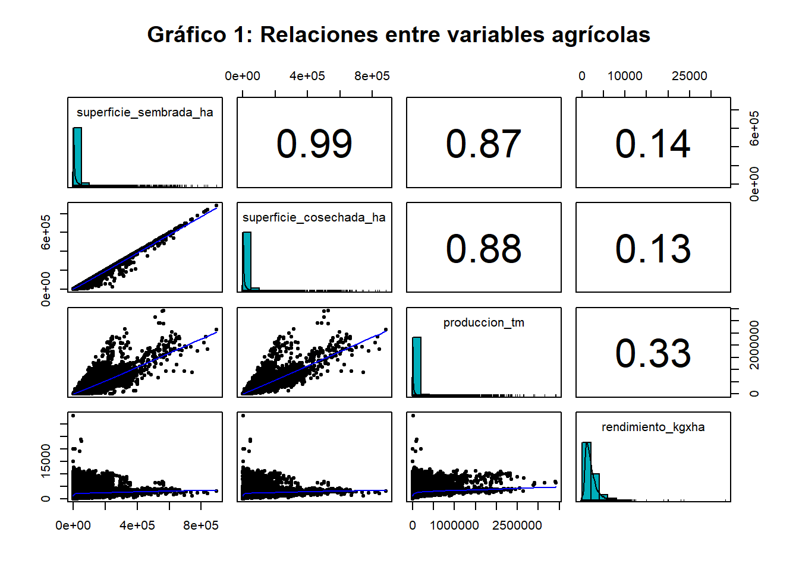
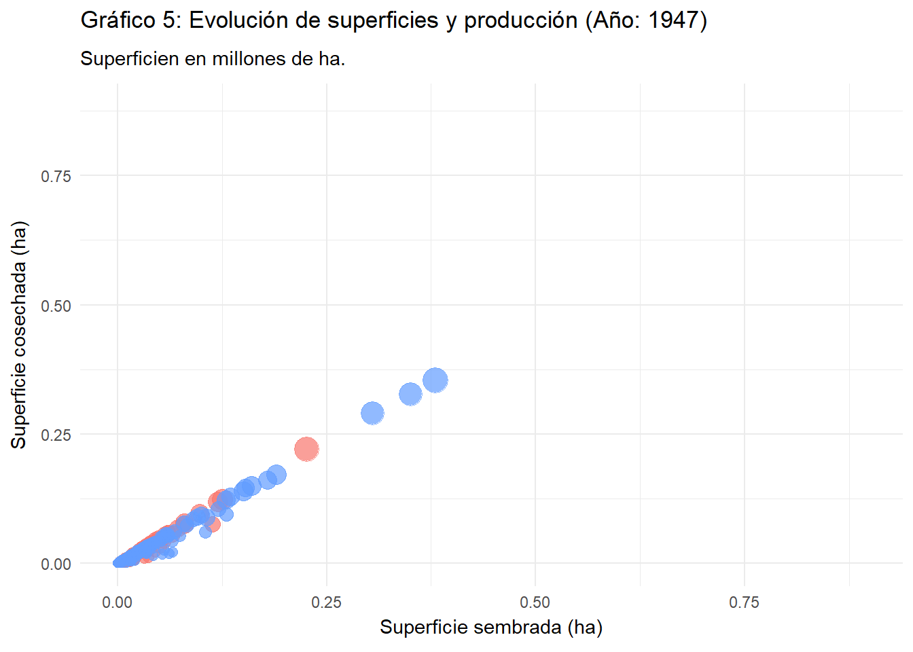

| superficie_sembrada_ha | superficie_cosechada_ha | produccion_tm | rendimiento_kgxha | |
|---|---|---|---|---|
| N° de valores | 57519.00 | 56867.00 | 56867.00 | 56867.00 |
| N° de ceros | 5.00 | 1043.00 | 1059.00 | 1059.00 |
| N° de NA | 0.00 | 652.00 | 652.00 | 652.00 |
| Mínimo | 0.00 | 0.00 | 0.00 | 0.00 |
| Máximo | 894613.00 | 883613.00 | 3412500.00 | 33333.00 |
| Rango | 894613.00 | 883613.00 | 3412500.00 | 33333.00 |
| Suma | 1265538340.00 | 1145433611.00 | 3258414957.00 | 130276507.00 |
| Mediana | 4220.00 | 3500.00 | 6600.00 | 1769.00 |
| Media | 22002.09 | 20142.33 | 57298.87 | 2290.90 |
| Error estándar de la media | 204.04 | 197.66 | 656.21 | 7.54 |
| IC 95% de la media | 399.92 | 387.42 | 1286.17 | 14.78 |
| Varianza | 2394635897.27 | 2221873388.86 | 24487422836.29 | 3231990.66 |
| Desviación estándar | 48935.02 | 47136.75 | 156484.58 | 1797.77 |
| Coeficiente de variación | 2.22 | 2.34 | 2.73 | 0.78 |
Trabajo Final
Trabajo Práctico Final de Análisis Inteligente de Datos.
Como hijo de productores agropecuarios, siempre estuve relacionado con la producción de distintos cultivos en la región central de la provincia de Santa Fe. Desde pequeño he visto como las distintas “variables” afectaban tanto la producción como el humor familiar.
El análisis que voy a realizar, es sobre la producción de soja, maíz y trigo en la República Argentina. Estos datos fueron descargados del sitio web de la Secretaría de Agricultura , Ganadería y Pesca https://datos.magyp.gob.ar “Secretaría de Agricultura , Ganadería y Pesca de la República Argentina”)
Descripción de los datos
| Título de la columna | Tipo de dato | Descripción |
|---|---|---|
| cultivo_nombre | Texto (string) | Nombre del cultivo. |
| anio | Número entero (integer) | Año al que corresponden los datos. |
| campania | Texto (string) | Campaña en la que se desarrollo el cultivo. |
| provincia_nombre | Texto (string) | Nombre de la provincia. |
| provincia_id | Texto (string) | Código de la provincia. |
| departamento_nombre | Texto (string) | Nombre del departamento. |
| departamento_id | Texto (string) | Código del departamento. |
| superficie_sembrada_ha | Número entero (integer) | Superficie sembrada en hectáreas. |
| superficie_cosechada_ha | Número entero (integer) | Superficie cosechada en hectáreas. |
| produccion_tm | Número entero (integer) | Producción en toneladas. |
| rendimiento_kgxha | Número entero (integer) | Rendimiento en kilos por hectárea. |
Análisis Gráfico y Descriptivo Preliminar
Correlaciones
Es de esperar que a las medidas estén correlacionadas dado que a mayor superficie sembrada se espera mayor produccion. La única que no está correlacionada es el rendimiento por ha.

BoxPlot
Hay gran variabilidad en los datos, ya que hay muchos departamentos de variado tamaño, con superficies y rindes de todo tipo.

Gráficos
Evolución de la siembra de los cultivos desde 1947 a 2023.

1970: Comienzo de la siembra directa en Argentina (fuente: Aapresid - Asociación Argentina de Productores en Siembra Directa).
2008: Inicio del conflicto entre el gobierno nacional y los productores agropecuarios.
En el Gráfico 1 se aprecia el crecimiento exponencial a partir de 1970 de la superficie sembrada con soja, cuando se comenzó a utilizar la siembra directa — una técnica que consiste en sembrar directamente sobre el rastrojo del cultivo anterior, sin labrar previamente el suelo.
En 2008, dicho crecimiento se detiene. El conflicto del campo fue una profunda disputa entre el gobierno nacional y el sector agropecuario, originada por la Resolución 125/2008, que establecía un sistema de retenciones móviles a las exportaciones de granos, especialmente soja.
En el caso del trigo, la serie se mantiene relativamente estable. Para el maíz podemos notar que en 2008, se comienza a elegir este cultivo con menos retenciones en lugar de la soja.
Superficie histórica sembrada por provincia y cultivo.

Las provincias de mayor producción de los cultivos en estudio son Buenos Aires, Córdoba, Santa Fe, Entre Ríos y La Pampa.
Mejores Rindos Históricos por Provincias y Departamentos.
| anio | provincia_nombre | departamento_nombre | cultivo_nombre | rendimiento_kgxha |
|---|---|---|---|---|
| 1994 | Tucumán | Famaillá | maíz | 33333 |
| 1960 | Santa Fe | Rosario | maíz | 23700 |
| 1964 | Córdoba | Tercero Arriba | maíz | 23000 |
| 1985 | Santa Fe | Vera | soja | 20000 |
| 2011 | Córdoba | San Alberto | soja | 19902 |
| 1953 | Buenos Aires | Junín | trigo | 19000 |
| 2013 | Catamarca | El Alto | maíz | 14933 |
| 2018 | San Luis | Ayacucho | maíz | 12500 |
| 2020 | San Luis | Ayacucho | maíz | 12200 |
| 1948 | Santa Fe | San Justo | maíz | 12000 |
Mejores Campañas de la historia.
| campania | produccion_tm |
|---|---|
| 2018/2019 | 131584322 |
| 2019/2020 | 126953165 |
| 2021/2022 | 125048532 |
| 2020/2021 | 124387993 |
| 2016/2017 | 122857978 |
| 2023/2024 | 121560870 |
| 2015/2016 | 110203053 |
| 2014/2015 | 109145803 |
| 2017/2018 | 99766295 |
| 2013/2014 | 95674224 |
